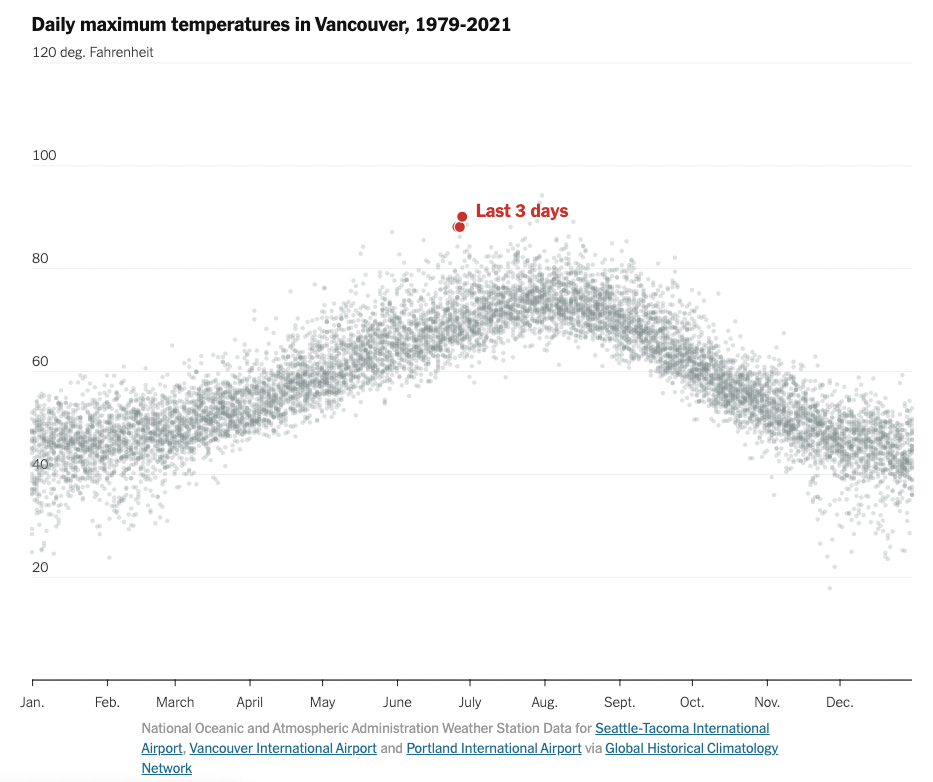

Task Abstraction

The high level action of the viz is to analyze the daily maximum
temperature in Vancouver from 1979 to 2021 (existing data). The
mid-level action of the viz highlights the maximum temperature of the
last 3 days in Vancouver (at the time the viz was created). The viz
also shows the trend of maximum temperatures over the course of the
year. Low level: The user identifies the target of the last three days
and is able to compare this target to the rest of the data.